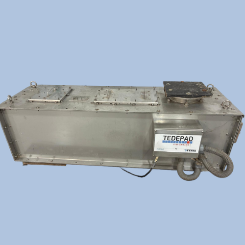

Tedepad® applies microwave technology to viscera generated during onboard fish processing, inactivating the Anisakis parasite before waste is returned to the sea. Fully automatic. No consumables. CE certified.

When fish are eviscerated aboard a vessel and the waste is discharged directly into the sea, living parasites re-enter the marine ecosystem. Crustaceans, fish and cephalopods ingest them, perpetuating the infection chain that ultimately reaches the human consumer.
Anisakis causes anisakiasis — a parasitic illness with allergic reactions ranging from mild to severe — generating consumer distrust, additional processing costs and product recalls.
Parasites released with viscera reduce fish reproductive capacity and increase parasite load in fishing grounds.
Anisakiasis can cause severe allergic reactions. It is one of the most common fish-related food allergies in Europe.
Anisakis presence erodes consumer confidence, increases quality-control costs and can result in costly product recalls.
Tedepad® intercalates directly into the vessel's existing viscera extraction pipeline, with no major modifications required. The process is fully automatic and transparent to daily onboard operations.
Fish are eviscerated aboard as usual. Viscera are directed into the vessel's existing waste extraction pipeline.
Tedepad® applies microwave energy to viscera in transit, inactivating Anisakis and other parasites present. The process is automatic and requires no manual operation.
Treated waste — free of viable parasites — is returned to the sea without harming the marine ecosystem or restarting the parasite cycle.
The first system specifically designed to treat viscera generated aboard fishing vessels using microwave technology — addressing the problem at its source.
Fully automatic, no consumables and no major vessel modifications required. Integrates directly into the existing extraction line and operates without interfering with daily work aboard.
By inactivating parasites before discharge, Tedepad® reduces the parasite load in fishing grounds, protects marine biodiversity and contributes to the long-term sustainability of fish stocks.
Tedepad® was validated within the European PARASITE project, funded by the EU Seventh Framework Programme. The project brought together institutions from 13 countries to evaluate parasite treatment systems across the fish food chain.
In 2024, the Instituto de Investigaciones Marinas (IIM-CSIC), under the GESTPAR programme of Spain's Secretaría General de Pesca (MAPA), confirmed Tedepad®'s effectiveness for parasite inactivation aboard fishing vessels.
Contact the Marexi team for more information, technical specifications or an onboard demonstration.
Contact Marexi